说明：宙斯Zeus规则引擎功能介绍集合
规则运行的引擎，主要通过配置化方式实现策略的部署和执行，从而满足逻辑多样性、更新频率高、响应速度快的诉求
一、规则引擎的核心
宙斯是业务安全中心自建的规则引擎平台，基于Aviator表达式引入场景、规则、因子等概念搭建，将策略的执行分为执行层和计算层。
执行层：通过场景获得一堆规则集合，规则执行完成后将其结果和对应的决策返回；
计算层：在规则执行时会进行其构成因子计算。
引入概念的说明：
场景：一堆规则的集合，关联业务请求与策略
场景配置：通过场景、规则、决策构成的场景配置组成策略，例如：“外卖营销场景” 下 “是模拟器的请求” 进行 “拦截”
规则：由因子和参数构成作为逻辑封装的顶层，仅存在True/False两种形态，例如：是不是模拟器的请求
因子：引擎中最小的逻辑单元，常常将复杂逻辑进行封装类似“特征”的概念，可在多个规则中复用，例如：“系统文件空间”、“baseband_version码”是判断模拟器的特征
参数：业务传入的基本变量
决策：针对结果的处理动作，例如：通过、拦截、冻结账号、加入黑名单等

二、周边服务的集成
几类在引擎建设中必备的周边服务，特别是在风控业务中广泛使用
-
与名单库的联动
无论是在风控业务和非风控业务，都会有名单管理的诉求。而这类诉求往往会同策略有直接的关联。例如：金融欺诈场景需要识别欺诈用户、金融贷后场景严重逾期用户需要加入禁贷名单。
在名单库联动的诉求中，主要分为策略查询名单库和策略写入名单库。首先要有一个名单库存储服务，再此基础上与引擎进行联动，查询服务通过因子（名单库因子）、写入服务通过决策（携带附加信息的决策）实现最终的联动

-
几类常用的特征逻辑封装
（1）累计因子：在业务中会高频使用到与累计相关的逻辑。例如：在登陆、下单、支付等事件需要对同ip的userid进行计数计算，计算结果作为特征引用在规则中。
常见的实现方式可通过硬编码方式，但存在逻辑频繁变化，不好维护且更新效率低的问题，或者通过异步hive数据加工特征但时效性较低（T+1）。要满足高时效、高灵活、好维护的要求，宙斯引入Scorpio技术组件实现累计通用逻辑的封装，比如，支持累计周期、计数/求和/最近几次）、累计值等特征计算流程配置化。但在实践中发现，还存在长周期数据精度低、历史数据无法保存等问题
（2）决策表因子：在部分业务中需要引擎处理的判断条件较多，各条件又相互组合、有多种决策方案的情况，需要精确、简洁的方式来描述这类复杂逻辑。
在低频使用是，可以通过硬编码的case-when、if-else语句实现但在实时性和配置化上不尽人意，最终通过决策表将多个独立的条件和多个动作直接的联系清晰的表示出来并实现逻辑的封装。
（3）名单库因子：与名单库联动过程中将查询名单的逻辑进行封装
（4）规则组因子：将一堆规则进行打包，通过评分概念实现规则的动态复用
通过上述四类特殊逻辑的封装，大大简化了逻辑配置流程，提升了规则引擎对于复杂逻辑实现的覆盖范围。
-
与外部数据联动
随着业务逻辑复杂程度增加，使用引擎时无法在发起请求就将执行所需要的全部参数准备好。针对这类情况宙斯通过数据接口的方式实现了外部数据的补充。在策略执行时根据计算需要动态获取相关的参数。在实现与外部数据联动的功能后，大大降低了使用规则引擎业务方数据准备阶段的压力，从全部参数准备简化为仅提供核心参数即可，剩余参数按需引擎自行调度即可。但当前还面临着多线程的并行获取方式，导致下游提供接口服务方的性能压力较大的问题，引擎如何优化解决该问题仍也是一个挑战

-
与算法平台的联动
在引擎自动化、智能化的进程中，一个首要解决的问题是怎样跟算法、模型平台进行联动，将算法模型能力引入。最简单、快速的方式是使用引擎提供的外部数据联动方式，将模型结果包装成数据接口使用。但在实践过程中发现模型的出入参数较多且存在变化，整体的配置化效率低、模型应用和迭代频率受限制。无论深度学习还是算法工程平台目前主攻计算、训练等场景，在上下游应用提供标准化的数据产出，但无法同类似引擎的平台对接。因此，仅聚焦在引擎与算法平台的联动上，可通过建设调度模块实现：1.训练样本预处理-->2.算法平台对接-->3.自动化生成接口-->4.自动注册接口/策略至引擎-->5.评估任务启动-->6.评估结果处理（策略上下线、样本数据沉淀）-->1.训练样本预处理的闭环流程

-
场景路由
--待补充--
-
运行监控
无论是引擎自身运行还是业务策略应用都需要进行监控，特别是业务往往会监控跟用户、KPI相关的核心指标。例如：风控就需要重点监控准确率和召回率指标。目前监控能力如下：
（1）在引擎自身运行上，会监控场景决策命中率、规则命中率、因子利用率等工程指标。
（2）在业务逻辑上的监控，当前是业务自建的cat/魔数报表。
（3）平台提供的规则熔断功能，有效的解决了因人工误操作情况导致命中量激增而对业务造成大规模的影响
-
操作的安全性与便捷：
在策略部署上，静默期、策略演练（回溯、双跑、标记）、强制标记
在策略管理上，规则组、因子工具、标签等
在策略排查上，排查探针、依赖关系等工具
三、离线引擎
随着引擎在多业务场景的应用，我们发现几个实时引擎不好处理的场景。比如拉新场景，需要结合“注册+登陆+交易”等多种行为来判断是否有“薅羊毛”等黑灰产行为，需要将很多事件放到一起去综合判定。当发现风险时，或在当前时间点漏过的变异风险在发现之后，需要对历史数据进行回捞，这些在实时引擎中都不太好实现。当前已有的异步引擎也无法很好地进行覆盖。为了避免做“重复造轮子”的事情，团队充分地讨论了实时、异步和离线引擎的定位和服务边界。
比如：累计单POI单日下单量超过100单为风险特征，在实时引擎中，超过100单的用户再次下101单会被认为异常拦截；在离线引擎中，超过100单的用户，其下的所有订单都为异常订单将被处置。
|
实时引擎 |
异步引擎 |
离线引擎 |
|
|---|---|---|---|
|
定位 |
实时执行策略并作出决策判断 |
实时执行策略但不做决策返回 |
一种离线回捞，针对历史数据做大量回捞 |
|
服务场景 |
面向C端、部分B端等需要实时策略判断的业务场景 例如：账户登录、收银台交易作弊识别、金融欺诈识别等 |
仅需要策略执行结果不需要决策的场景 例如：感知规则、评估规则、核查规则、用户画像构造规则等 |
对时效性要求不高，多流、批处理进行识别的场景 例如：商家刷单、风险回溯、新业务离线风险识别 |
|
无法处理的场景 |
复杂的时序性事件的策略执行 无法主动执行策略，均为被动调用 |
复杂的时序性事件的策略执行 无法主动执行策略，均为被动调用 |
较复杂的高阶运算逻辑无法处理 只能按时调度或异步监听，无法实时被调用 |
|
优势 |
高时效性，毫秒级 |
时效性一般，分钟级 |
低时效，天级 |

在实时引擎已经覆盖的逻辑基础上，我们引入新的封装逻辑-个体因子，全局因子实现SQL语句的配置化管理，进而实现批量累计、聚合特征的计算，比如：近一年某商家的平均下单金额，近30天商户大盘下单均值，标准差等批数据的复杂逻辑。并基于Spark和实时引擎底层，实现多流和批数据的处理，解决上述场景无法处理的一些问题。
四、性能说明
千条规则执行效率在ms级别
SLA：4个9